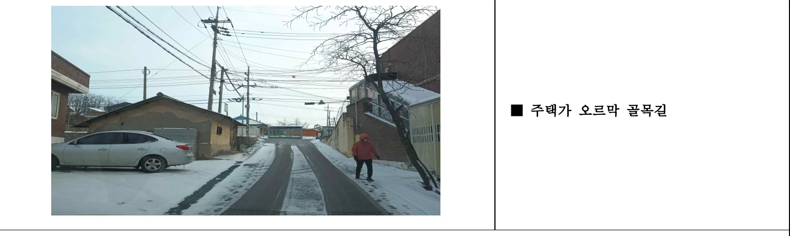

705. 다음 상황에서 가장 안전한 운전방법 2가지는?

- ①주차된 차량 뒤편에서 보행자가 나타날 수 있다는 점을 유념하면서 운전한다.
- ②우측에 있는 보행자와 거리를 두고 일시정지 하거나 서행하여 지나간다.
- ③눈이 쌓여 도로가 미끄러우므로 속도를 높여 빠르게 진행한다.
- ④눈이 쌓인 도로에서는 최고속도의 20 퍼센트를 가속한다.
- ⑤보행자의 돌발행동을 방지하기 위하여 경음기를 계속 울리며 주행한다.
정답 보기
정답
① 주차된 차량 뒤편에서 보행자가 나타날 수 있다는 점을 유념하면서 운전한다.
② 우측에 있는 보행자와 거리를 두고 일시정지 하거나 서행하여 지나간다.
근거·해설
모든 차의 운전자는 보도와 차도가 구분되지 아니한 도로 중 중앙선이 없는 도로에서 보행자의 옆을 지나는 경우에 는 안전한 거리를 두고 서행하여야 하며, 보행자의 통행에 방해가 될 때에는 서행하거나 일시정지하여 보행자가 안전하게 통행할 수 있도록 하여야 한다(도로교통법 제27조 제6항 제1호). 차마의 운전자는 도로(보도와 차도가 구 분된 도로에서는 차도를 말한다)의 중앙(중앙선이 설치되어 있는 경우에는 그 중앙선을 말한다. 이하 같다) 우측 부분을 통행하여야 한다(도로교통법 제13조 제3항). 이상기후에 대비하여 감속규정을 적용한다. 최고속도의 100분 의 20을 줄인 속도로 운행하여야 하는 경우는 비가 내려 노면이 젖어있는 경우, 눈이 20밀리미터 미만 쌓인 경우이 고, 최고속도의 100분의 50을 줄인 속도로 운행하여야 하는 경우는 폭우ㆍ폭설ㆍ안개 등으로 가시거리가 100미터 이내인 경우, 노면이 얼어 붙은 경우, 눈이 20밀리미터 이상 쌓인 경우이다(도로교통법 시행규칙 제19조 제2항).